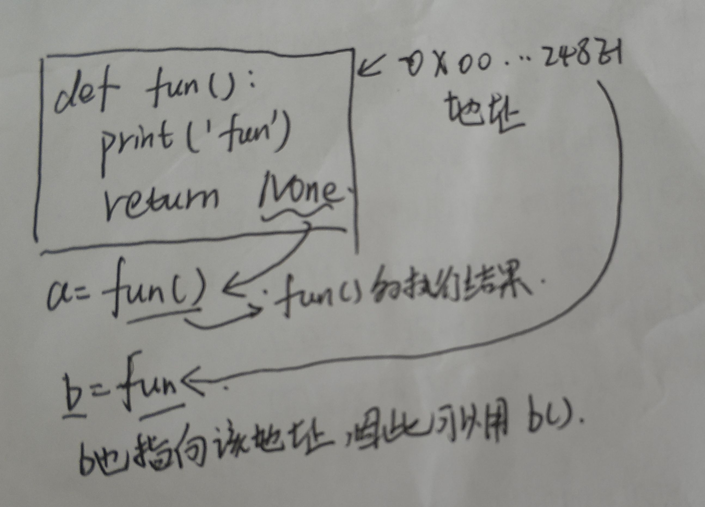
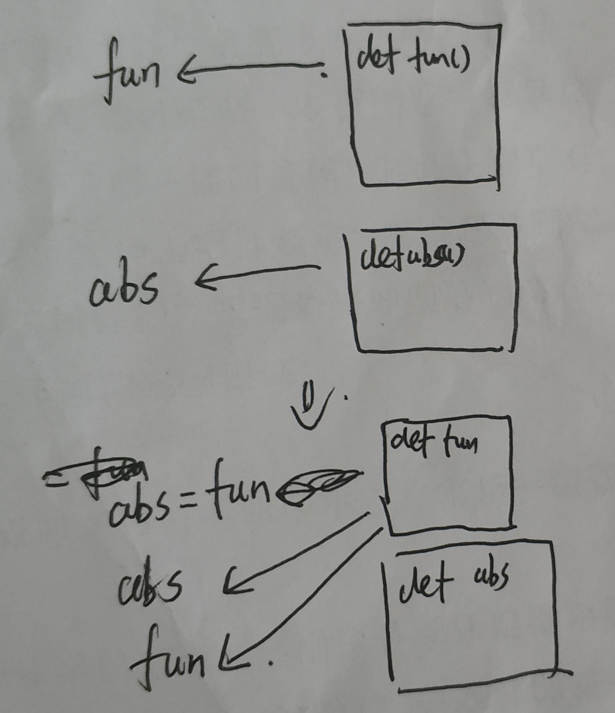
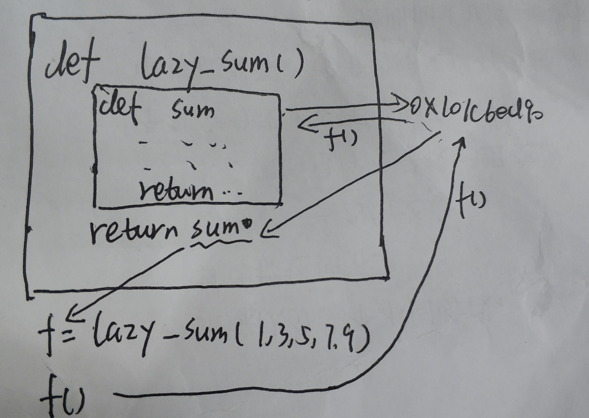
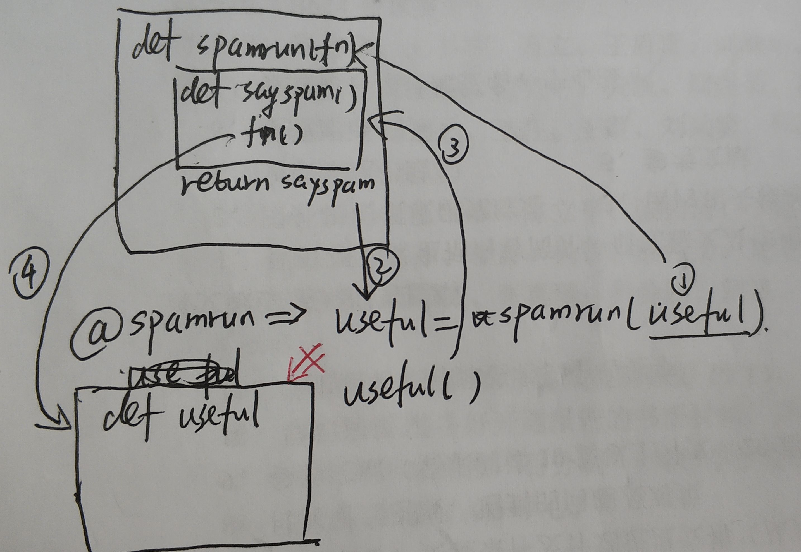

fun 和fun()的区别以一段代码为例：
def fun():
print('fun')
return None
a = fun() #fun函数并将返回值给a
print('a的值为',a)
b = fun #将fun函数地址赋给b
b() #调用b，b和fun指向的地址相同
print('b的值为',b)
'''输出
fun
a的值为 None
fun
b的值为 <function fun at 0x00000248E1EBE0D0>
'''根据输出可以看出，a=fun()是将函数fun的返回值（None）赋给a，而b=fun是将函数的地址赋给b,如果调用函数，需要b()

类似的，其他内置函数也可以通过这种方法，相当于起了一个同名的函数
>>>a = abs
>>>a(-1)
1除此之外，原来的函数名也被覆盖为其他函数，例如
def fun():
print('fun')
abs = fun
abs() #输出fun
综上，可以理解为fun，abs在不带括号时为变量，该变量包含了函数在内容的地址

参考链接：https://www.liaoxuefeng.com/wiki/1016959663602400/1017434209254976
以廖老师的教程为例
def lazy_sum(*args):
def sum():
ax = 0
for n in args:
ax = ax + n
return ax
return sum
>>> f = lazy_sum(1, 3, 5, 7, 9)
>>> f
<function lazy_sum.<locals>.sum at 0x101c6ed90>
>>>f()
25
在单步调试中可以发现，当读到def sum():时，解释器会直接跳到return sum将sum函数的地址返回给f，因此f()即为执行sum() (不是非常准确，但先如此理解)
如果对返回函数还是有些不理解的话，可以假设lazy_sum()的返回值改为1
def lazy_sum(*args):
def sum():
ax = 0
for n in args:
ax = ax + n
return ax
return 1
f = lazy_sum(1,3,5,7,9)
print(f)#Q输出1
print(f())#报错'int' object is not callable
此时无论lazy_sum()的参数如何修改，都会把1赋给f,而1()是不可调用的，因此会报错
⭐返回函数中的闭包问题也要了解一下，内嵌函数可以访问外层函数的变量
仍然上述例子，此时将lazy_sum()改为空函数，内嵌的sum()需要参数：
def lazy_sum():
def sum(*args):
ax = 0
for n in args:
ax = ax + n
return ax
return sum
f = lazy_sum()(1,3,5,7,9)
print(f)#输出25按照运算的优先级，可以理解为：
lazy_sum()，返回sum;sum(1,3,5,7,9)，返回25;25赋给f如果有了以上基础，再来看@的用法就会觉得很容易了
如果需要具体理解装饰器，可以参考廖老师的博客，本文仅介绍@的执行流程
本文参考了 Python @函数装饰器及用法（超级详细），Python中的注解“@”
def spamrun(fn):
def sayspam():
print("spam,spam,spam")
fn()
return sayspam
@spamrun
def useful():
print('useful')
useful()
'''
输出：
spam,spam,spam
useful
'''修饰效果相当于useful = spamrun(useful)，具体步骤如下：
@spamrun,此时将下方的useful作为参数传入到spamrun中spamrun(useful)中，由于是返回函数，直接将sayspam()的内存地址赋给usefuluseful(),此时useful指向了sayspam，因此打印spam,spam,spam。然后执行fn()，此时的fn才指向原来的useful()的地址，开始执行print('useful')执行流程可以在下图了解一下，可以理解为经过@后，useful已经不直接指向函数useful()的地址了，而是sayspam。再调用useful()时，执行sayspam(),由于fn保存原先useful()函数的地址，因此可以执行useful()的功能，即可以打印出'useful'。如果‘使坏’把fn()去掉的话，相当于useful()再也不会执行了

一般情况下，使用@时不会改变函数原先的执行逻辑，而只是增加功能，因此成为装饰器，如廖老师教程中可以使原函数打印日志
def log(func):
def wrapper(*args, **kw):
print('call %s():' % func.__name__)
return func(*args, **kw)
return wrapper
@log
def now():
print('2015-3-25')
now()
'''
call now():
2015-3-25
'''def spamrun(fn):
def sayspam():
print("spam,spam,spam")
fn()
return sayspam
def spamrun1(fn):
def sayspam1():
print("spam1,spam1,spam1")
fn()
return sayspam1
@spamrun
@spamrun1
def useful():
print('useful')
useful()
'''
spam,spam,spam
spam1,spam1,spam1
useful
'''修饰效果相当于useful = spamrun(spamrun1(useful))
叠加使用时,装饰器的调用顺序和声明顺序是相反的,可以理解成是一个递归的过程。
@spamrun，开始向下寻找def 函数名@spamrun1继续向下找def useful，执行useful = spamrun1(useful)@spamrun1返回useful给@spamrun，执行useful=spamrun(useful)以廖老师教程中的举例，简化一些，先不考虑*args,**kw，因为涉及到返回函数的闭包问题
def log(text):
def decorator(func):
def wrapper():
print('%s %s():' % (text, func.__name__))
return func()
return wrapper
return decorator
@log('execute')
def now():
print('2015-3-25')
now()修饰效果相当于now=log('execute')(now)
1. 解释器读到@log('execute')，先执行了log('execute')，返回函数decorator
2. 将now作为decorator(func)的形参，返回warpper
3. 将`warpper`的内存地址赋给变量`now`此时调用now()，先执行完print(...),然后return func()。注意此处是带括号的，因此执行了真正的now函数，最终return的为None
带参数的多次调用可以将之前的情况组合即可
@XXX
def funXXX():会被解释成funXXX = XXX(funXXX)
funXXX = XXX(@行的参数)(funXXX)fun和fun()的区别初学Python，学识短浅，希望多多交流